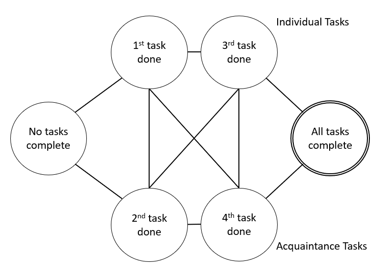

Ponder and Prove
This week’s life lesson is:
Be efficient and effective by finding a good path to your goals in a very beneficial way.
Your first task is to evaluate your path to graduation. Your “grad plan” is meant to help you reach your goal of graduating with the degree you want. In terms of efficiency and effectiveness, how good is your current grad plan? While the university requires you to use the “grad planner” tool, YOU should use it to think about and explore the many paths to graduation starting from where you are right now. Those paths are part of the graph that is all classes and majors at BYU-Idaho. Explore what the grad planner tool can do for you when you keep efficiency in mind. Also realize there are many other people and resources you have at your disposal to help you explore and to graduate. Find them. They may be professors, counselors, bishops, friends, advisors, or any other employee or student of the university.
Your second task is to build a graph for how an acquaintance plans a trip. Have your friend describe the choices that they made in their plan and why they made them, and then incorporate them into your graph. Your graph should encompass choices that they could have made, but didn't choose. Highlight the their actual choices on the graph.
This week, we also looked at algorithms for finding the shortest path. Sometimes this involves physical distance, but other times, this is the shortest series of steps to accomplish a goal.
Your third task is to write down one of your long term goals and one path that takes you to that goal. Then, add in additional choices for each intermediate step between where you are now and the goal. Be specific in your possible choices - don't just include opposites of the choice that you first see to accomplish your goal. Include other paths that may lead to your goal. For example, maybe your goal is to own your own business. One path is to start from scratch with a business plan. Another option would be to work for Chick-fil-a so that you can buy a franchise license. Some of the intermediate steps would be working for Chick-fil-a, get a business loan, open your own restaurant, etc.
Your last task is to show someone the USA graph and ask them to think about how they would find the shortest path (driving-distance-wise) from Sacramento California to Augusta Maine. Each node represents a capital of the state and each edge is the driving distance between each of them.
Observe their process, figure out what algorithm they were using. Figure out the complexity of their algorithm and compare it to that of your own.
{kind=link}